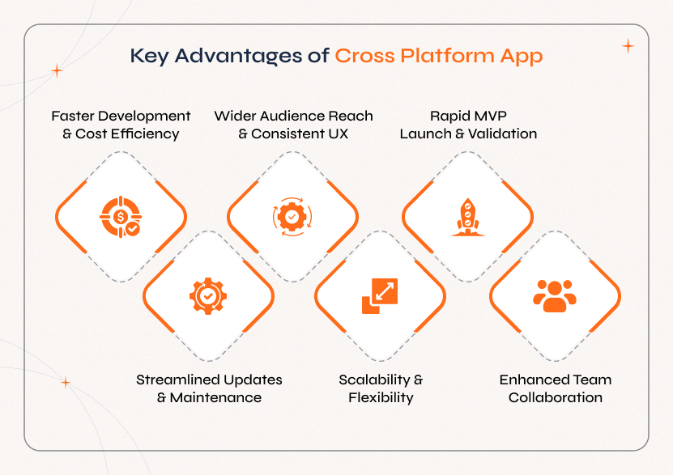
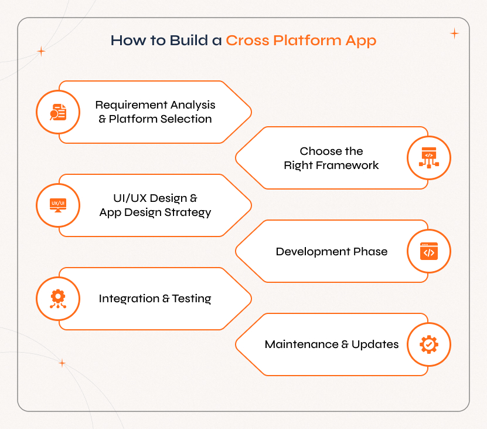
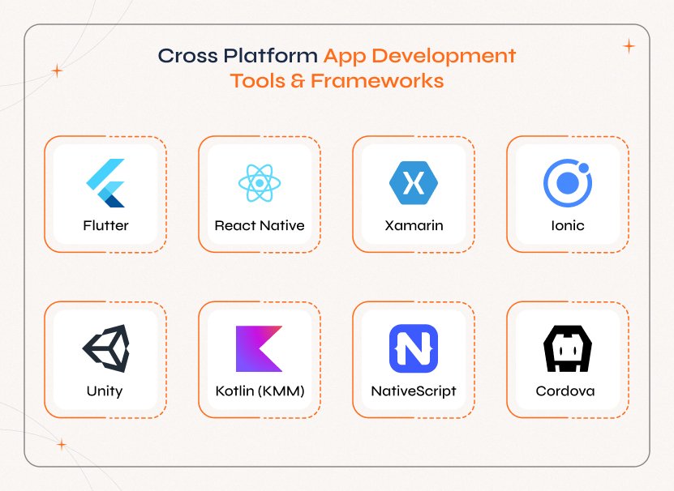
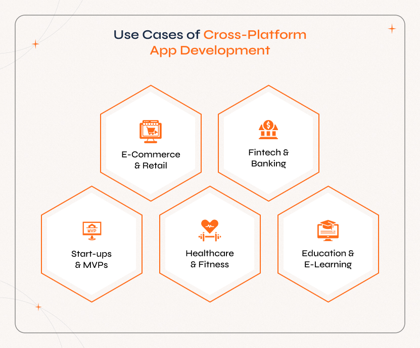
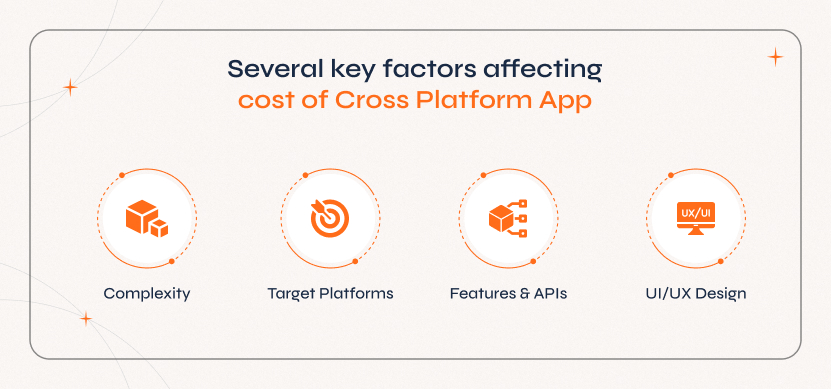

With the growing demand for mobile-first experiences, businesses are increasingly adopting cross platform app development over traditional mobile app development. Reports claim that about 60% of businesses now prefer cross-platform apps as they allow reaching users across multiple devices without doubling the development efforts.
Cross-platform apps are built using a single codebase, which in turn reduces the development time, supports faster time-to-market, offers scalability, and is cost-efficient. Besides this, they require minimal updates and maintenance, while integrating new features or expanding into additional platforms is quicker than traditional mobile app development.
To create cross-platform app, developers rely on frameworks like Flutter, React Native, or Xamarin, which provide ready-made components and native-like performance. To obtain a smooth user experience, it is vital for the developer to make effective planning, maintain UI/UX design consistency, and perform rigorous testing. Businesses embracing cross platform mobile app development are not just optimizing resources but also gaining maximum user engagement across devices. This way, businesses stay competitive in 2026 and thus stay ahead of the ever-evolving digital landscape.
What is a Cross Platform App Development?
Cross-platform app development is the process that involves developing applications using a single codebase that runs on multiple operating systems. Unlike the native development approach, which involves creating separate apps for iOS and Android, cross platform software development allows one app to serve audiences of multiple platforms efficiently.
This approach is helpful for businesses looking to reach a wider audience quickly. Enterprises choose cross platform web application development to ensure consistent functionality across mobile, desktop, and web platforms. On the other hand, start-ups use multi platform app development to build MVPs, validate ideas, and get faster time-to-market.
Cross platform app developers rely on frameworks like Flutter, Xamarin, or React Native as they offer reusable components and near-native performance. Additionally, these tools allow businesses to accelerate development cycles, reduce maintenance complexity, and scale features effortlessly across multiple devices without needing to start from scratch.
From e-commerce apps to enterprise dashboards, cross platform app development ensures a consistent user experience, faster deployment, and a significant reduction in costs compared to building separate native apps. This makes it evident that cross platform software development has become the most preferred strategy for companies looking to innovate efficiently and maintain a competitive edge in 2026.
Key Advantages of Using Cross Platform App Development
Cross platform app development has become the go-to approach for businesses looking for faster, cost-effective, and scalable mobile solutions. With the help of cross platform app development frameworks, companies can build apps that work seamlessly on iOS, Android, and web, which in turn reduces duplication of efforts and saves time as well as resources.
By leveraging a single codebase across multiple platforms, companies can optimize business operations and ensure consistent quality. In fact, using cross platform app frameworks reduces development costs by 30-40% compared to native apps, making it a smart choice for start-ups and enterprises. It is the ideal choice for modern mobile app development in 2026 for the following reasons:

1. Faster Development & Cost Efficiency
With a single codebase,
developers are not required to write code for each platform. This not only speeds up
development timelines but also lowers overall costs. As a result, launching products
can be done faster, ensuring a competitive advantage in the mobile-first market.
2. Streamlined Updates & Maintenance
Maintenance efforts such as updates
and bug fixes are done once for all platforms. It is particularly beneficial for MVP
development services as it enables iterations and feature rollouts while reducing
operational overhead.
3. Wider Audience Reach & Consistent UX
Multi-device compatibility of the
cross platform app design ensures a uniform user experience on iOS, Android, and
web. This wider reach enhances user engagement and strengthens brand loyalty without
needing to build separate apps.
4. Scalability & Flexibility
Integrating cross platform software with
APIs, third-party tools, and new features is easy. This way, apps can grow alongside
your business needs without rewriting code.
5. Rapid MVP Launch & Validation
Start-ups can quickly develop and test
MVPs by gathering feedback early and iterating efficiently. Cross platform
frameworks support agile development and iterative improvement.
6. Enhanced Team Collaboration
A unified codebase in cross platform
mobile application development simplifies coordination between developers,
designers, and QA teams. With clear communication and shared components, this
approach reduces miscommunication and improves productivity.
Our powerful cross platform app development help you cut 40% costs, launch faster & reach more users.
Common Cross Platform App Development Challenges and Tips to Tackle Them
Although there are many significant benefits cross platform software development offers, it does involve some challenges that businesses should consider for successful app delivery. It is vital for companies to understand these challenges and plan ahead to save time, improve user experience, and reduce overall costs.
The most common challenges are listed below:
1. Performance Limitations
When it comes to graphics-intensive tasks or
heavy animations, cross platform apps may slightly lower
performance compared to native apps. However, this issue can be better
handled by developing cross platform app using Flutter for near-native performance
or React Native for flexibility.
2. Platform-Specific Feature Access
It becomes harder to implement some
native features across platforms. Accessing device-specific APIs or hardware
capabilities requires custom modules or plugins. Hence, doing a proper framework
evaluation before development ensures your app supports the required functionality
without compromising the UX.
3. Testing & Debugging Across Devices
It is vital to test cross platform
apps on multiple devices, OS versions, and screen sizes. Performing rigorous QA
practices involving automated testing and real-device testing helps identify
inconsistencies and prevent user experience issues.
- Select the right framework based on your app's complexity and target devices.
- Plan for native modules when platform-specific features are essential.
- Implement robust QA practices with manual and automated testing across devices.
- To reduce performance lag, optimize the code and resources.
- Keep updates and maintenance centralized to simplify bug fixes and improvements.
By addressing these challenges proactively, businesses can enjoy the benefits of cross platform software development while minimizing common pitfalls. Despite the challenges, cross platform development services remains a scalable and cost-effective solution for modern mobile app development.
Step-by-Step Process on How to Build a Cross Platform App
Building a cross platform app in 2026 involves clear, strategic planning to ensure speed, performance, quality, and consistency across devices. Here’s the simple breakdown:

Step 1: Requirement Analysis & Platform Selection
Start by identifying
your app's goals, target audience, and key features. Find out which platforms, such
as iOS, Android, or Web, are best to reach your users effectively.
Step 2: Choose the Right Framework
The next step is to select the best
platform for app development for your project. Popular choices include Flutter for
near-native performance, Xamarin for enterprise-grade apps, and React Native for
flexibility.
Step 3: UI/UX Design & App Design Strategy
This step involves creating a
consistent cross-platform app design that works seamlessly on all devices. It is
important to focus on intuitive navigation, responsive layouts, and a seamless user
experience.
Step 4: Development Phase
Now, app development begins with the chosen
framework. A single codebase lets you target multiple platforms at the same time.
This, in turn, saves time and reduces costs.
Step 5: Integration & Testing
This step involves integrating APIs,
third-party tools, and backend systems. To ensure performance, functionality, and
usability across all devices, it is vital to conduct robust testing for hybrid apps
and cross-platform web applications.
Step 6: Maintenance & Updates
During this stage, planning for ongoing
maintenance and updates will be done. Efficient cross-platform development allows
you to roll out features, fix bugs, and improve performance on all platforms from a
single codebase.
By carefully following this step-by-step approach, businesses can ensure that the cross platform app built is efficient, scalable, and delivers a seamless experience to users irrespective of the device.
We build faster, cost-efficient cross platform apps that scale seamlessly across iOS, Android, & web, all from a single codebase.
Things to Look for Before Choosing the Right Cross Platform Framework
Before proceeding with your project, selecting the right cross-platform app development framework is one of the most important decisions. While there are many platforms for app development available, the choice goes beyond picking the most popular tool. It is vital to choose the framework that fits your goals, performance needs, and long-term scalability.
In other words, the best platform for mobile app development should align with your business goals, budget, and the type of user experience you want to deliver. The criteria to look for before choosing the framework for your cross-platform software development include:
1. Project Requirements & Target Platforms
The very first step is to
define if you want to develop an app for iOS, Android, desktop, or web. With that
decided, choose from the best cross-platform app development tools
that work for multiple platforms and offer mobile-first experiences.
2. Performance & Scalability
It is important to check if the framework
you have chosen can handle complex features, APIs, and future scaling.
Enterprise-level solutions should rely on frameworks that deliver stability.
3. UI/UX Capabilities
Check if the framework you have chosen supports
cross-platform app design that offers a native-like experience to the users. For
instance, Flutter offers a rich widget library with which creating smooth,
responsive interfaces becomes easier.
4. Community Support & Ecosystem
It is better to pick a framework that
has a large developer community, third-party plugin support, and offers frequent
updates.
5. Integration & Maintenance
It is important for the framework to
seamlessly support integration with APIs, SDKs, and databases. Besides, the tools
should offer regular updates to ensure security and long-term maintainability.
6. Cost & Time Efficiency
Certain frameworks are suitable for rapid
prototyping and MVP development. Hence, it is ideal to check developer availability,
project timelines, and overall costs before deciding how to build a cross-platform
app effectively.
Native Vs Cross-Platform App Development: Choosing the Right Approach
At times, people are in a dilemma, choosing between native and cross-platform app development. Picking up the right development approach impacts cost, performance, and time-to-market. Here’s a quick comparison between these two:
| Aspects | Native App Development | Cross-Platform App Development |
|---|---|---|
| Development Cost | Higher, as the codebase is separate for iOS and Android. | Lower, it uses a single codebase for multiple platforms. |
| Time to Market | Slower due to building separate apps for each. | Quicker, one codebase serves multiple platforms. |
| Maintenance | Separate patch updates for each platform. | The maintenance is much easier than native. |
| Performance | Slightly better, optimized for each operating systems. | Stable performance with advanced framework. |
| User Experience | Feels fully native. | Near-native experience achievable. |
| Scalability | It needs additional effort for multiple platforms. | Too easy to scale across different platforms. |
After careful consideration, it’s clearly stated that cross-platform app development offers faster development, lower costs, and easy maintenance. This is ideal for reaching multiple platforms efficiently. Even though native apps excel in performance, cross-platform provides a balance for most modern projects.
Best Cross Platform App Development Tools & Frameworks to Use in 2026
The success of any cross-platform app development project is often based on choosing the right framework. Also, the framework you choose should align with your app's performance needs, budget, and scalability goals. This ensures faster development, better UX, and reduced costs.
Given below are the top frameworks to choose in 2026, along with their strengths, limitations, and ideal use cases.

1. Flutter
It is an open-source framework developed by Google that uses a single codebase to deliver apps with native-like performance and expressive UIs. It features a rich widget library and thus makes it easy to create visually consistent apps across iOS, Android, and the web. Flutter is often loved by developers for its fast development cycles and hot-reload features.
- Programming Language - Uses Dart, optimized for UI rendering.
- Rendering Engine - Powered by Skia for smooth 60fps animations.
- Hot Reload - Speeds up debugging & development cycles.
- Multi-Platform Reach - iOS, Android, Web, & Desktop.
- Widget Library - Extensive, customizable UI components.
- Pros - High speed, customizable design, & strong Google support.
- Cons - Larger app size, smaller third-party library ecosystem.
- Use Case - Best for MVPs, startups, and apps requiring a sleek design.
2. React Native
It is backed by Meta and is one of the most widely adopted cross-platform app development frameworks. React Native provides near-native performance as it combines JavaScript and native components. With a huge developer community and robust library support, it never fails to offer scalability and flexibility for complex apps.
- Programming Language - JavaScript & TypeScript.
- Rendering - Bridges to native components for performance.
- Hot Reload & Fast Refresh - Quick debugging.
- Ecosystem - Huge library of third-party plugins.
- Integration - Easy with existing iOS/Android codebases.
- Pros - Large ecosystem, reusable code, & near-native performance.
- Cons - It may at times require native modules for advanced functionality.
- Use Case - Suitable for e-commerce, social platforms, and enterprise apps.
3. Xamarin
It is yet another top framework that is owned by Microsoft and supports seamless integration with the .NET ecosystem. Thus, it is the top choice for enterprise-grade projects. It supports code sharing across platforms while still supporting platform-specific customization when needed. Xamarin is highly preferred by businesses seeking long-term stability and enterprise-grade security.
- Programming Language - C# with .NET framework.
- Compilation - Compiles to native ARM code.
- UI Options - Xamarin.Forms for shared UI or Xamarin.Native.
- Enterprise Support - Strong Visual Studio integration.
- Cross-Platform - iOS, Android, Windows apps.
- Pros - Enterprise support, strong .NET integration, & robust for complex apps.
- Cons - Steeper learning curve, heavier app size.
- Use Case - Ideally works for corporate apps, fintech, and large-scale enterprise solutions.
4. Ionic
Ionic can be used to build hybrid apps faster and affordably as it harnesses standard web technologies like HTML, CSS, and Angular. It ideally works for projects that prioritize speed and budget, as it offers flexible UI components and plugins for quick prototyping. However, the performance is based on WebView, which is a limitation when it comes to graphics-heavy apps.
- Programming Languages - HTML, CSS, JavaScript, Angular.
- Framework Type - Hybrid app development.
- UI Components - Pre-built, customizable templates.
- Plugins - Uses Capacitor & Cordova for native features.
- Cross-Platform Reach - iOS, Android, Web (PWA).
- Pros - Cost-efficient, rapid prototyping, & strong web tech support.
- Cons - Less performance-intensive than native or Flutter.
- Use Case - Perfect for content-driven apps, hybrid app development, & cross-platform web apps.
5. Unity
It is a real-time development platform that works for gaming and immersive app development with 2D, 3D, AR & VR support for mobile, desktop, and gaming consoles. It is highly useful for developing interactive apps as it offers powerful rendering capabilities and extensive asset store support.
- Programming Language - C# scripting.
- Rendering - Advanced 2D/3D engine.
- Platform Support - iOS, Android, Desktop, Consoles, AR/VR.
- Asset Store - Huge ecosystem of plugins & assets.
- Specialization - Ideal for gaming & immersive experiences.
- Pros - Best for AR/VR, multi-platform support, and powerful graphics engine.
- Cons - Complex for simple apps as it requires skilled developers.
- Use Case - Works best for games, AR/VR solutions, and simulation apps.
6. Kotlin Multiplatform Mobile (KMM)
It is the latest from JetBrains and allows you to share the business logic across iOS and Android while maintaining native UI flexibility. It effectively balances code sharing and native performance and acts as a popular option for enterprises testing multi-platform app development.
- Programming Language - Kotlin, shared code for iOS & Android.
- Compilation - Compiles to native binaries for each platform.
- Code Sharing - Business logic shared, UI written natively.
- Integration - Works seamlessly with existing native codebases.
- Pros - Native performance, strong JetBrains support, & growing ecosystem.
- Cons - Smaller community compared to Flutter & React Native.
- Use Case - Works for enterprise apps with complex logic and platform-specific UI needs.
7. NativeScript
It lets developers build apps using JavaScript, TypeScript, or Angular. This gives direct access to native APIs without additional wrappers. NativeScript is great for developing apps that require high performance but still reuse the code across platforms.
- Programming Languages - JavaScript, TypeScript, or Angular/Vue.
- Rendering - Direct access to native APIs (no web views).
- Plugins - Strong community-driven plugin ecosystem.
- Performance - Near-native speed since UI is rendered via native APIs.
- Pros - Full native API access, strong community support, & great performance.
- Cons - Smaller ecosystem compared to React Native and Flutter.
- Use Case - Ideal for feature-rich apps that need native integrations.
8. Cordova
It is one of the earliest hybrid app development frameworks that lets developers use HTML, CSS, and JavaScript for app creation. It is lightweight and ideal for simple applications.
- Programming Languages - HTML, CSS, JavaScript.
- Framework Type - Hybrid app development using WebView.
- Plugins - Cordova plugins give access to native device APIs.
- Cross-Platform - iOS, Android, Windows, Browser.
- Pros - Simple, cost-effective, and uses web development skills.
- Cons - Limited performance and doesn’t work for graphic-heavy apps.
- Use Case - Best for basic apps, content-driven solutions, and prototypes.
Real-World Use Cases of Cross-Platform App Development
Cross platform app development is powering real businesses across industries. With the compatibility to run on iOS, Android, and web, it helps companies cut development costs, launch faster, and reach wider audiences. Some of the most powerful use cases include:

1. Start-ups & MVPs
Cross platform frameworks like Flutter and React
Native allow rapid prototyping and faster MVP launches. This way, founders can test
ideas across all platforms at the same time without heavy upfront costs.
2. E-Commerce & Retail
Retailers use cross platform mobile apps to
deliver consistent shopping experiences. With one code base, it is possible to get
faster updates, better inventory sync, and unified customer engagement on all
devices.
3. Healthcare & Fitness
Cross platform solutions in healthcare support
appointment booking, patient monitoring, telehealth, fitness tracking, etc.
4. Fintech & Banking
Banks and fintechs use cross platform apps to offer
secure mobile banking, digital wallets, and stock trading platforms. The benefits
include cost-efficient scaling, high security, and smooth performance.
5. Education & E-Learning
EdTech platforms use cross platform solutions
to support video classes, progress tracking, and quizzes across multiple devices.
This way, students and teachers can get consistent user experiences on mobile,
tablet, and desktop.
How Much Does It Cost to Build a Cross Platform App?
The cost to build a cross-platform app varies widely based on your project goals, chosen features, and design complexity. Unlike native apps, you need not build separate versions for iOS and Android. i.e., cross platform software development is all about building once and launching everywhere. This, in turn, saves both time and money.
Several key factors affecting cost are as follows:

1. Complexity
Consider simple apps like calculators or news apps, which
cost less, whereas advanced app development with payment gateways, AI, or AR/VR
requires higher budgets.
2. Target Platforms
It is to be noted that adding web or desktop versions
increases development scope.
3. Features & APIs
Focusing on more integrations like chat, payment,
geolocation, etc., implies more coding effort and thus results in increased cost.
4. UI/UX Design
Adding a polished, interactive design increases the cost
of development, which in turn boosts user engagement.
1. MVP or Basic App – $15,000 – $40,000. This is great for startups testing ideas.
2. Mid-Level App – $40,000 – $80,000. Consider eCommerce or booking apps.
3. Full-Feature Enterprise App – $80,000+. This involves complex workflows, custom integrations, and advanced security.
Hybrid app development can often cut costs by 30–40% when compared to building two separate native apps.
Building native apps for both iOS and Android often leads to the 2X the cost and timeline. By choosing the cross platform software development, businesses not just saving resources but can also fast forward the launch without sacrificing quality.
Partner with Sparkout to build cost-efficient, scalable & feature-rich cross platform software development.
Future of Cross Platform App Development
Cross platform app development is becoming the most preferable option of software development among businesses as they are looking for faster, smarter, and more cost-effective ways to reach users on multiple devices. With the increasing number of popular frameworks and cross platform app builders, companies no longer need to invest in separate mobile app development for iOS and Android. Instead, a single codebase does the work and delivers consistent user experiences across platforms.
Key Trends Shaping the Future
Artificial Intelligence (AI) integration is offering the greatest advantages of personalization and automation. Progressive Web Apps (PWAs) are now offering lightweight, browser-based alternatives with app-like experiences. Frameworks like Flutter are expanding to web and desktop, while hybrid app development continues to gain traction.
Rising Adoption & New Trends
In today’s fast-paced digital world, no-code and low-code platforms are simplifying multi-platform app development for start-ups and small teams. On the other hand, enterprises are shifting towards cross platform software development to cut costs and scale faster. Several reports suggest that the hybrid app software development market will grow at an 18% CAGR by 2030, which signals strong future demand.
Why Choose Sparkout to Build Cross-Platform App Development?
Building a cross-platform app is not just about writing code, it is all about ensuring speed, scalability, and user experiences across devices. At Sparkout Tech, we not only handle traditional mobile app development, but we develop cross platform apps by combining strategic planning, the right cross platform software development frameworks, and faster execution. Thus, we ensure the delivery of apps that work seamlessly on iOS, Android, and the web.
Here is why businesses should choose Sparkout:
- We have expertise and proven experience in Flutter, React Native, Kotlin Multiplatform, and hybrid app development.
- With a single codebase and optimized processes, we ensure faster time-to-market and shorten launch timelines by up to 40%.
- We offer budget-friendly development without compromising on performance and UI/UX.
- As a trusted cross platform software development company, we support adding customized features that align with your industry and business goals.
- The cross platform apps we build and deliver are secure, scalable, and future-ready for start-ups and enterprises.
- Our team of experts will keep your app ahead of market competition with ongoing maintenance and upgrades.
Deliver powerful cross-platform apps with speed and impact.